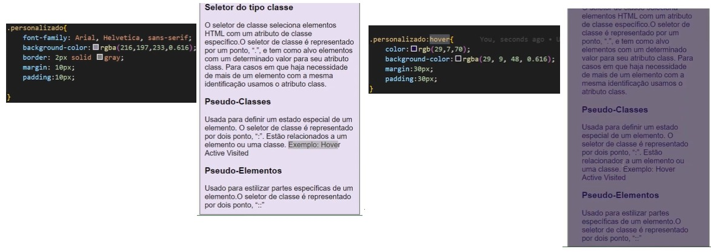

Elementos block-level, inline e Seletores Personalizados
Agrupamento de elementos
Os elementos <div> e <span> são usados para agrupar e estruturar um documento e são frequentemente usados em conjunto com os atributos class e id.
Elementos Block-level
O elemento <div> é um elemento block-level. Tem a função de agrupar elementos html, definindo blocos de contéudo sempre iniciando uma nova linha e ocupando toda a linha. Exemplo:
Bloco 1
Bloco 2
Processos para realizar o envelopamento com a tag div:
Primeiramente para aproveitar e envelopar tuas tags ao mesmo tempo é necessário ficar pressionado o botão Alt do teclado sem parar;
Selecionar o conteúdo e solta o clique do mouse;
Seleciona o outro conteúdo para ocorrer essa divisão de tags e não ser apenas uma;
Presione as teclas Ctrl+Shift+p;
Selecione a opção quebrar linha com abreviação;
Por fim digite a tag div.
Desse jeito:
Entretanto não fica ainda tal perceptivo, nesse caso realizamos algumas estilizações:
Primeiramente é necessário digitar um link para realizar a criação dele usando o método Externo:
No VS do arquivo CSS colocamos a estilização desejada e no Navegador aparecerá com a estilização realizada, nesse caso com a cor de fundo roxo e um espaçamento realizado apartir do comando margin:
Elementos Inline
O elemento <span> é um elemento inline. É um elemento neutro embutido que marcam um bloco dentro de uma mesma linha ou parágrafo. Pode ser usado pelo CSS para estilização de partes específicas do conteúdo do documento HTML, ou seja, um marca-texto destacando uma parte do conteúdo ali apresentado.
Processos para realizar o envelopamentocom a tag span
Selecionar o conteúdo desejado;
Presione as teclas Ctrl+Shift+p;
Selecione a opção quebrar linha com abreviação;
Por fim digite a tag span.
No arquivo CSS no VS o comando font-weight bold determinará em negrito.
Desse jeito:
Seletores Personalizados
Possibilita personalizar tags do documento HTML para estilização. Temos os seletores do tipo classe e o seletor do tipo id
Seletor do tipo id
O seletor de id usa o atributo id de um elemento HTML para selecionar um elemento específico. Cada id é única. O seletor de id é representado por “#”.
Processos para realizar a estilização usando a id
Primeiramente na tag desejada coloca id e entre aspas o nome desejado, lembrando que ela deve ser única;
No arquivo de estilização no VS, coloca a tag que é no que se refere o "#" mas o nome colocado, nesse caso foi usado principal;
E realiza a estilização desejada;
Nesse exemplo, foi realizado uma alteração de fonte com o comando font-family;
Obs:uma fonte sans-serif são mais fáceis e mas legíveis;
O comando text-align para centralizar o texto;
O comando rgb para dar a cor da fonte do texto que significa a mitura das cores rgb(red:vermelho, green:verde, blue:azul);
O comando background-color é a cor que ficará no fundo do título;
O comando border será a borda.
Desse jeito:
Seletor do tipo classe
O seletor de classe seleciona elementos HTML com um atributo de classe específico.O seletor de classe é representado por um ponto, “.”, e tem como alvo elementos com um determinado valor para seu atributo class. Para casos em que haja necessidade de mais de um elemento com a mesma identificação usamos o atributo class.
Processos para realizar a estilização usando a classe
Quando tem várias tags e deseja fazer a alteração que se encontra ali, porém não todas da mesma forma, sendo dividida em blocos, nesse exemplo;
Com a tag do div dará um nome qualquer para a classe;
Exemplo: div class=agrupamento no mesmo div ocorrerá uma divisão com os blocos que se encontra ali;
Exemplo1: div class=exemplo1 para o Bloco 1;
Exemplo2: div class=exemplo2 para o Bloco 2;
No arquivo de estilização no VS, coloca a tag que é no que se refere o "." mais o nome colocado, nesse caso foi usado div.agrupamento;
E realiza a estilização desejada;
Ainda no arquivo do CSS, com a outra classe nomeada, nesse caso para o bloco 1, podendo utilizar .exemplo1 e realizar a estilização;
E por fim a útilima classe referente ao bloco 2, ocorrerá o mesmo processo que do bloco 1, mas podendo ter a estelização diferente.
Usada para definir um estado especial de um elemento. O seletor de classe é representado por dois pontos, “:”. Estão relacionados a um elemento ou uma classe. Existe várias opções de pseudo-classes, entre elas se encontra a hover, active e visited, abaixo utilizando a hover, que ao passar o mouse encontra os link sobre cada uma dela.
Processos para realizar a estilização usando a pseudo-classe hover
Primeiramente escolha a parte que deseja colocar a hover, ou seja, quando colocar o mouse em cima aarecerá aquele conteúdo;
Nesse exemplo vai ser utilizado a classe do personalizado;
No arquivo de estilização no VS, coloca a tag nomeada mais o sinal da pseudo-classes ":", nesse caso foi usado .personalizado:hover;
E por fim realiza a estilização desejada;
Quando passa o mouse na tela do navegador fica conforme a estilização realizada.

Outro exemplo seria utilizar o comando display:none dentro da tag desejada, que irá sumir com esse conteúdo. E para exibir o conteúdo ao passar com o mouse utiliza o comando display:block dentro do pseudo-classe hover:
Pseudo-Elementos
Usado para estilizar partes específicas de um elemento.O seletor de classe é representado por dois pontos seguido de dois pontos, “::” Existe várias possibilidades de pseudo-elementos para utilizar.
Processos para realizar a estilização usando o pseudo-elemento selecction
Primeiramente escolhe a tag desejada, nesse exemplo foi o h3;
Em seguida o pseudo-elemento, que foi selection sendo antes utilizado por dois pontos e mais dois pontoe que denomina um pseudo-elemento;
Esse pseudo-elemento ao passar pelo conteúdo h3 le
Por fim realiza a estilização desejada.
Outro exemplo seria usar o pseudo-elemento first-letter, em que a primeira letra aparecerá conforme a estilização feita no arquivo CSS, na imagem abaixo está se referindo a primeira letra do parágrafo: